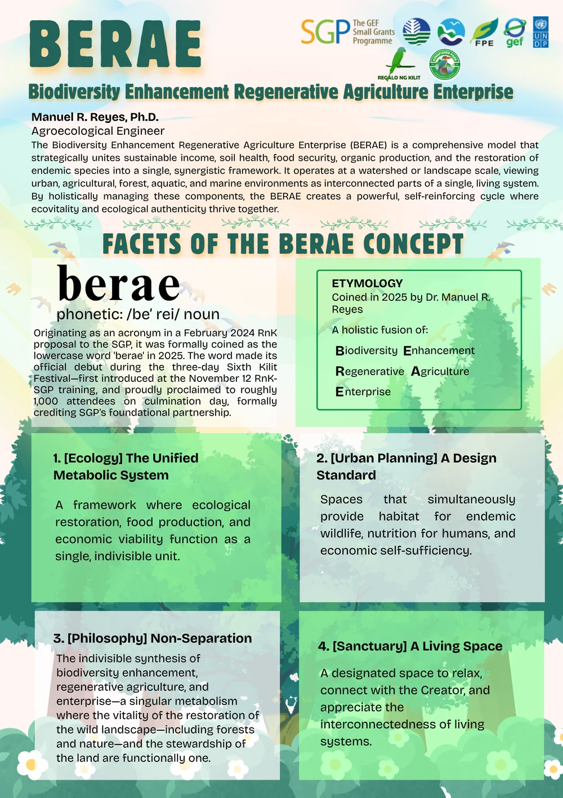

Biodiversity Conservation
Enhancing habitat, native flora, environmental awareness, and appreciation for the biological diversity of the Calamianes.

RnK's work brings biodiversity conservation, regenerative agriculture, education, food security, sustainable enterprise, and community participation into the same system.
Enhancing habitat, native flora, environmental awareness, and appreciation for the biological diversity of the Calamianes.
Promoting food production that rebuilds soil and works with biodiversity through approaches such as composting, intercropping, agroforestry, and careful water management.
Creating practical learning opportunities through school gardens, environmental activities, scholarships, student support, and community education.
Connecting conservation with local ownership, livelihood opportunity, small enterprise, and community participation.
Working with schools, universities, local groups, government, technical institutions, and private partners to share knowledge and strengthen implementation.
BERAE brings ecological restoration, regenerative food production, and enterprise together instead of treating them as separate goals. It approaches biodiversity, agriculture, human nutrition, and economic viability as parts of one connected living system.

The School-plus-Home Gardens cum Biodiversity Enhancement Enterprise (SHGBEE) approach connects school and home gardens with biodiversity enhancement, environmental education, food security, and regenerative agriculture.
The BERAE network spans schools, a university, a community organization, and Kingfisher Park across Coron and Busuanga.